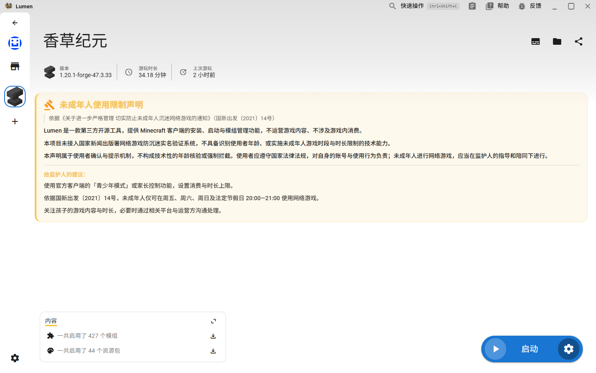
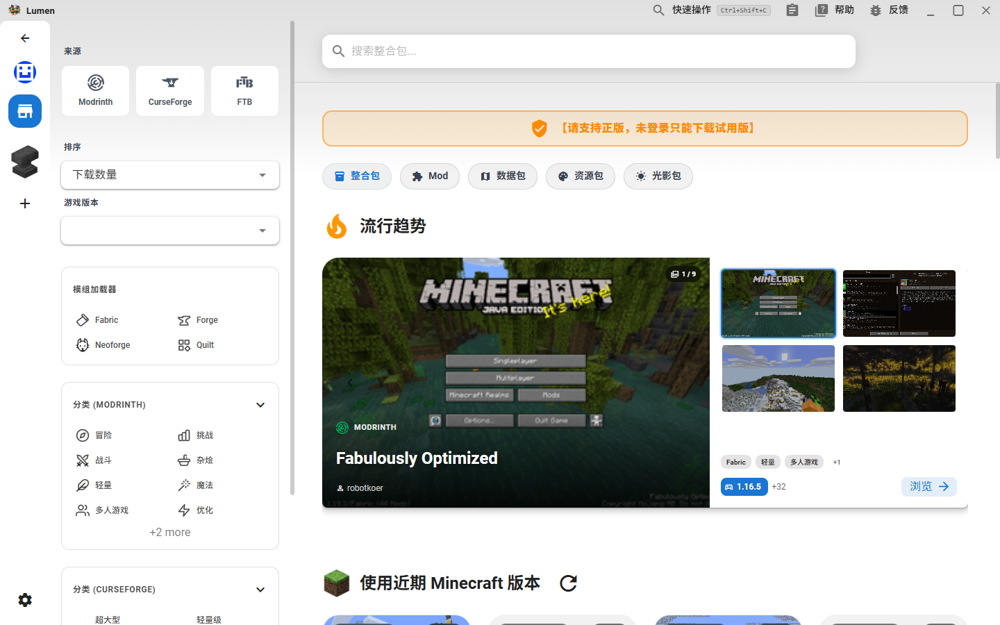
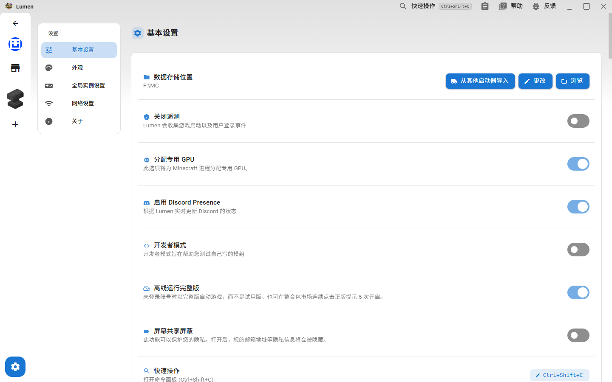

下载完全开放
走官方 Mojang 或国内镜像，支持分段并发下载、断点续传、失败自动重试、SHA-1 校验与损坏文件自动修复。不存在任何「不支持下载」开关。
- Forge / Fabric / Quilt / NeoForge / OptiFine
- 自动安装并管理 Java 运行时
- 多连接并发下载器
不是「功能更少」的妥协版，而是把限制从架构里彻底拆掉。
走官方 Mojang 或国内镜像，支持分段并发下载、断点续传、失败自动重试、SHA-1 校验与损坏文件自动修复。不存在任何「不支持下载」开关。
深浅色跟随系统或手动切换。顶端栏、侧边栏、主要色、卡片、背景、警告、错误共 7 项配色可自由调整。
.xtheme 导入 / 导出内置 BMCLAPI 只是默认值，不是绑定。可新增、改名、改地址、删除任意数量的镜像源，保存后立即热生效。
Modrinth 全程可用无需 Key；CurseForge 支持自填 API Key，未配置时给出可读提示而不是 403。
内置完整手柄适配，带快捷菜单与大屏专属界面。
删除了上游的启动即拉取新闻轮播与贡献者接口，首页不再发起任何无关网络请求。只留下你需要的东西。
侧边栏管理实例与整合包，首页汇总模组、存档、光影与服务器，启动按钮始终触手可及。
以下均为 Lumen v0.2.2 实机运行截图，未经修饰。



跟随系统或手动锁定，7 项界面配色可自由调整，层级在深浅两种主题下都保持清晰。
背景图 / 视频 / 粒子 / 光晕 / 背景音乐，叠加模糊度、色调遮罩与自定义 CSS，做出你自己的风格。
命令面板（Command Palette）让你用键盘直达任意功能；手柄用户则有完整的大屏布局与空间焦点导航。
提供安装版与便携版两种形态，选择适合你的那一种。
certutil 或任意校验工具核对完整性。
以下流程与界面文案均取自 Lumen v0.2.2 实机运行界面，非推测。
Lumen-0.2.2-win32-x64-setup.exe（99.1 MB）。%LOCALAPPDATA%\Programs\Lumen。electron-builder.config.ts 的 win.signtoolOptions.certificateFile）即可消除此提示。
深色 / 浅色 / 跟随系统。之后在「设置 → 外观」可随时改。%APPDATA%\Lumen）或 自定义位置（可浏览选盘符）。右上角头像 → 「添加账号」，在「验证服务」下拉框里选：
首页点「添加」新建实例，或左侧栏的 add 按钮：
.zip 直接拖到启动器窗口，或从商店一键装。curseforge:// / modrinth:// / technic:// / lumen:// 链接。「设置 → 网络设置」，三个关键项：
自动 (根据网络决定)（国内走镜像、海外走官方）/ 官方 / BMCL。镜像地址可自定义，保存后立即生效不用重启。api.curseforge.com。官方 试试。
「设置 → 全局实例设置 → Java 内存」：
同页还能设 前置命令、JVM 启动选项、环境变量，以及 Minecraft 的分辨率（宽/高/全屏）和分辨率预设。
左侧栏 store 图标进入市场，包含：
选好项目 → 选实例 → 安装。模组的依赖会自动拉取，不用手动一个个装。
「设置 → 外观」，可调项全部无条件开放，没有赞助门槛：
.xtheme 文件，可与朋友分享LUMEN_UPDATE_ENDPOINT 环境变量才启用。升级请手动下载新安装包覆盖安装。%APPDATA%\Lumen，与 XMCL 完全隔离，两个可以共存。协议是 lumen://，不会抢 XMCL 的。与主流启动器的关键差异。
| 能力 | Lumen | PCL | HMCL | XMCL |
|---|---|---|---|---|
| 下载 MC | ✓ 无限制 | ✕ 源码硬关闭 | ✓ | ✓ |
| 主题 / 配色 | ✓ 7 项配色全开放 | ✕ 10 个被锁 | ✓ | ✓ |
| 镜像地址 | ✓ 完全可改 + 热更新 | ✕ 写死 | ✓ | ✓ |
| CurseForge Key | ✓ 用户自填 | — | ✓ | ✕ 仅环境变量 |
| 上游服务依赖 | ✓ 已切断 | 部分 | 部分 | ✕ 绑定 |
| 手柄 / 大屏模式 | ✓ 完整 | ✕ | ✕ | ✓ |
| 界面语言 | 简体中文 | 中文为主 | 多语言 | 多语言 |
| 启动时无关请求 | ✓ 无 | 有 | 有 | ✕ 新闻轮播 |
不需要注册任何平台账号，也完全免费。唯一的"账号"是游戏本身的 Minecraft 账号——支持微软正版登录（MSAL + Xbox Live + XSTS 三段式 OAuth 设备码流程）与各类外置登录（Yggdrasil）。
不会。Lumen 使用独立的数据目录 %APPDATA%\Lumen、独立的 appId（app.lumen.launcher）以及独立的 lumen:// URL 协议，可与已安装的 XMCL 同时存在，互不抢占。
当前安装包未做代码签名，这是个人维护项目的常态。点击「更多信息」→「仍要运行」即可。后续若配置了签名证书（electron-builder.config.ts 中的 win.signtoolOptions.certificateFile）即可消除该提示。
CurseForge 官方要求 API Key。请前往「设置 → 网络 → CurseForge API Key」粘贴你自己申请的 Key。留空时 Lumen 会给出明确提示，而不是抛出 403。Modrinth 全程无需 Key，功能完全可用。
原版、Forge、Fabric、Quilt、NeoForge、OptiFine 全部支持，可为同一 Minecraft 版本并存多个实例。Java 运行时由启动器自动下载安装与分配内存。
不会。Lumen 没有账号体系，没有遥测上报，首页不再拉取新闻轮播，所有上游服务依赖已被切断。自更新默认关闭，只有当你显式设置 LUMEN_UPDATE_ENDPOINT 时才会检查更新。唯一的网络行为是你主动下载游戏文件、模组与访问你配置的镜像源。
暂时不可以。Lumen 目前仅提供编译好的安装版与便携版，暂未开放源代码的对外获取与二次分发，相关流程正在整理中。后续开放时会通过项目社区渠道公布，请留意后续公告。
Lumen 建立在这些开源项目的成果之上，特此致谢。
MIT License
Lumen 的主体架构、Electron 外壳、主题系统与微软正版认证均源自 X Minecraft Launcher，是本项目最核心的基础。
github.com/Voxelum/x-minecraft-launcherPCL 分发有限许可
功能清单、交互设计与设置项的组织方式参考了 Plain Craft Launcher，尤其在下载源与主题个性化方面提供了重要参照。
github.com/Meloong-Git/PCLGPL-3.0
镜像（BMCLAPI）与资源提供方（provider）的抽象思路参考了 HMCL。相关部分为独立实现，未复制其源码。
github.com/HMCL-dev/HMCL依据《关于进一步严格管理 切实防止未成年人沉迷网络游戏的通知》（国新出发〔2021〕14号）
该通知第五条明确，本通知所称未成年人是指未满 18 周岁的公民；第四条要求家庭等社会各方面营造有利于未成年人健康成长的良好环境，依法履行未成年人监护职责，并在未成年人使用网络游戏时督促其完成实名身份验证。
Lumen 是一款第三方工具，提供 Minecraft 客户端的安装、启动与模组管理功能，不运营游戏内容、不涉及游戏内消费，且未接入国家新闻出版署网络游戏防沉迷实名验证系统。因此，本项目不具备识别使用者年龄、或实施未成年人游戏时段与时长限制的技术能力。
基于上述情况，本项目采取以下措施：
使用者应遵守国家法律法规及《Minecraft 最终用户许可协议》，对自身的账号与使用行为负责。未成年人进行网络游戏，应当在监护人的指导和陪同下进行，由监护人督促其完成实名身份验证并合理安排游戏时间。
本声明不免除任何主体依法应承担的责任。若您认为本声明的表述不准确或存在歧义，欢迎通过项目社区渠道提出修订意见。
本产品并非 Minecraft 官方产品，未经 Mojang Studios 或 Microsoft 官方认可，也不代表 Mojang Studios 或 Microsoft 的任何官方立场。Minecraft 是 Mojang Studios 的商标。本项目与 Mojang Studios、Microsoft 无任何关联，也未获得其授权或背书。
Windows 是 Microsoft Corporation 的注册商标。Minecraft 使用到的部分资源来自社区与原作者，请遵守其各自的许可协议。